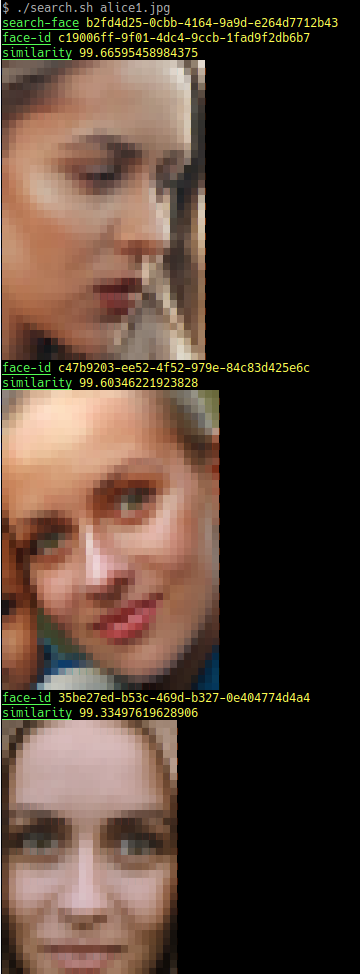

Step Functions + Rekognition
The goal : this project uses Rekognition to create a face collection and look for similar faces. It also uses Step Functions to orchestrate all the lambdas functions.


Install and setup the project
Get the code from this github repository :
# download the code
$ git clone \
--depth 1 \
https://github.com/jeromedecoster/step-functions-rekognition.git \
/tmp/aws
# cd
$ cd /tmp/aws
Exploring the project
Let’s look at some parts of the source code.
If we look the Makefile, we need 3 actions to deploy and test the project :
init: # terraform init + download sharp lambda layer
terraform init
if [ ! -f "./layers/$(ZIP)" ] ; then \
mkdir --parents layers ; \
cd layers ; \
curl --location \
"https://github.com/jeromedecoster/sharp-lambda-layer/releases/download/v0.24.1/sharp-0.24.1-for-node-12.zip" \
--output $(ZIP) ; \
fi
apply: # terraform plan then apply with auto approve + create rekognition collection
terraform plan -out=terraform.plan
terraform apply -auto-approve terraform.plan
./create-collection.sh
alice: # upload all alice images
./upload.sh alice1.jpg alice2.jpg alice3.jpg # ...
So :
# terraform init + download sharp lambda layer
$ make init
# terraform plan then apply with auto approve + create rekognition collection
$ make apply
# upload all alice images
$ make alice
In the state-machine.tf and state-machine.json files we :
- Use the Terraform template_file to inject data in the JSON workflow.
data template_file state_machine {
template = file("${path.module}/state-machine.json")
vars = {
detect_faces_function_arn = var.detect_faces_function_arn
no_face_detected_function_arn = var.no_face_detected_function_arn
add_to_collection_function_arn = var.add_to_collection_function_arn
thumbnail_function_arn = var.thumbnail_function_arn
}
}
- The JSON workflow :
{
"Comment": "Step Functions Rekognition processing workflow",
"StartAt": "DetectFaces",
"States": {
"DetectFaces": {
"Type": "Task",
"Resource": "${detect_faces_function_arn}",
"ResultPath": "$.ResultDetectFaces",
"Next": "AddToCollection",
"Catch": [
{
"ErrorEquals": [
"States.ALL"
],
"ResultPath": "$.Throw",
"Next": "ErrorDetected"
}
]
},
"ErrorDetected": {
"Type": "Task",
"Resource": "${no_face_detected_function_arn}",
"End": true
},
"AddToCollection": {
"Type": "Task",
"Resource": "${add_to_collection_function_arn}",
"ResultPath": "$.ResultAddToCollection",
"Next": "Thumbnail"
},
"Thumbnail": {
"Type": "Task",
"Resource": "${thumbnail_function_arn}",
"ResultPath": "$.ResultThumbnail",
"End": true
}
}
}
In the detect-faces.js Lambda file we :
- We detect the presence of faces with Rekognition.
- We save the returned datas into DynamoDB and S3 because each use of Rekognition is chargeable.
- We filter the results and we possibly raise errors.
let result = await detectFaces(event.Bucket, event.Key)
await saveToDynamoDB(event.Etag, event.Basename, result)
await saveToS3(event.Bucket, event.Noextname, result)
if (result.FaceDetails.length == 0) {
throw new NoFaceError(`No face detected in the image ${event.Key}`)
}
// ignore babies, little children and low quality faces
let filtered = result.FaceDetails.filter(face => {
return face.AgeRange.Low >= 10
&& face.Quality.Brightness >= 40
&& face.Quality.Sharpness >= 40
})
if (filtered.length == 0) {
if (result.FaceDetails.length == 1) {
throw new FaceRequirementError('The face detected does not meet the requirements')
} else {
throw new FaceRequirementError(`None of the ${result.FaceDetails.length} faces detected meet the requirements`)
}
}
async function detectFaces(bucket, key) {
return rekognition
.detectFaces({
Image: {
S3Object: {
Bucket: bucket,
Name: key
}
},
Attributes: ['ALL']
}).promise()
}
// ...
In the add-to-collection.js Lambda file we :
- Use the IndexFaces action to add the faces to our collection.
- We need to call the DeleteFaces action to remove the excluded faces.
for (let face of result.FaceRecords) {
if (face.FaceDetail.AgeRange.Low >= 10
&& face.FaceDetail.Quality.Brightness >= 40
&& face.FaceDetail.Quality.Sharpness >= 40) {
keep.push(face.Face)
} else {
excluded.push(face.Face.FaceId)
}
}
if (excluded.length > 0) {
let deleted = await deleteFaces(excluded)
}
// ...
async function deleteFaces(faceIds) {
return rekognition
.deleteFaces({
CollectionId: process.env.REKOGNITION_COLLECTION_ID,
FaceIds: faceIds
})
.promise()
}
In the thumbnail.js Lambda file we :
- We use to create a thumbnail of the face.
- We use Sharp instead of ImageMagick because Sharp is really fast.
- Infortunately Sharp is very heavy (more than
30 MB). So we use it via a Lambda layer
return Promise.all(faces.map(async face => {
return {
Buffer: await extractImage(raw, face.BoundingBox),
FaceId: face.FaceId
}
}))
// ...
function extractImage(buffer, boundingBox) {
let image = sharp(buffer)
return image
.metadata()
.then(metadata => {
return image
.extract({
left: Math.round(boundingBox.Left * metadata.width),
top: Math.round(boundingBox.Top * metadata.height),
width: Math.round(boundingBox.Width * metadata.width),
height: Math.round(boundingBox.Height * metadata.height)
})
.jpeg({
quality: 90
})
.toBuffer()
})
}
Run the project
When all the images have been uploaded, we can recover the generated data via the get-datas.sh script :
- Please note that the git project already contains all the generated data to explore and analyze the rekognition results for free.
log 'download' "files from $BUCKET/detect-faces"
aws s3 cp --recursive s3://$BUCKET/detect-faces/ ./datas/detect-faces
log 'download' "files from $BUCKET/index-faces"
aws s3 cp --recursive s3://$BUCKET/index-faces/ ./datas/index-faces
log 'download' "files from $BUCKET/keep-faces"
aws s3 cp --recursive s3://$BUCKET/keep-faces/ ./datas/keep-faces
log 'download' "files from $BUCKET/thumbnails"
aws s3 cp --recursive s3://$BUCKET/thumbnails/ ./datas/thumbnails
Then we can call the search.sh script to find similar faces :
- All search are saved in a searchs directory.
- All similar faces found are saved with the similarity percentage as name.
jq '.[].FaceId' --raw-output "datas/keep-faces/$NOEXTNAME.json" | while read id; do
# skip search-faces if already done (save money)
if [[ ! -f "searchs/$NOEXTNAME/$id.json" ]]; then
aws rekognition search-faces \
--region $REGION \
--collection-id $PROJECT_NAME \
--face-id $id \
> searchs/$NOEXTNAME/$id.json
fi
# ...
done
So :
# download all generated data
$ ./get-datas.sh
# search all faces similar to `alice1`
$ ./search.sh alice1.jpg
Note that if you run this script on a Linux OS, you will see a preview of the images directly in the terminal :

And we get these results for the image alice1.jpg :

- The face in alice1.jpg is
99.66595458984375 %similar with this face :
- The face in alice1.jpg is
99.60346221923828 %similar with this face :
- The face in alice1.jpg is
99.33497619628906 %similar with this face :
- The face in alice1.jpg is
98.80915832519531 %similar with this face :
- The face in alice1.jpg is
98.9106674194336 %similar with this face :
- The face in alice1.jpg is
96.93378448486328 %similar with this face :